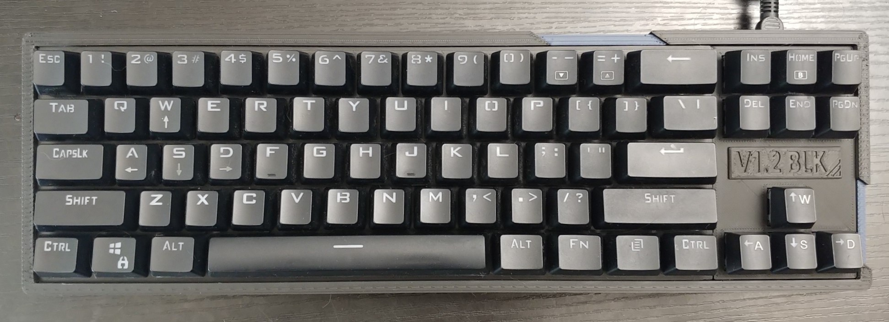
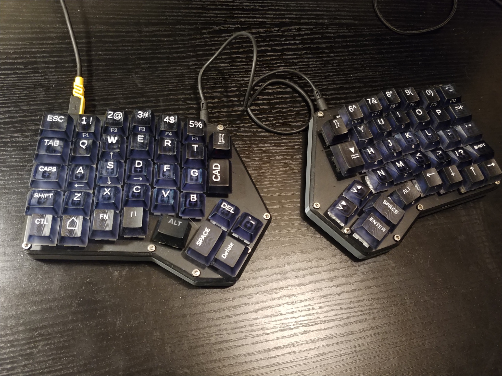
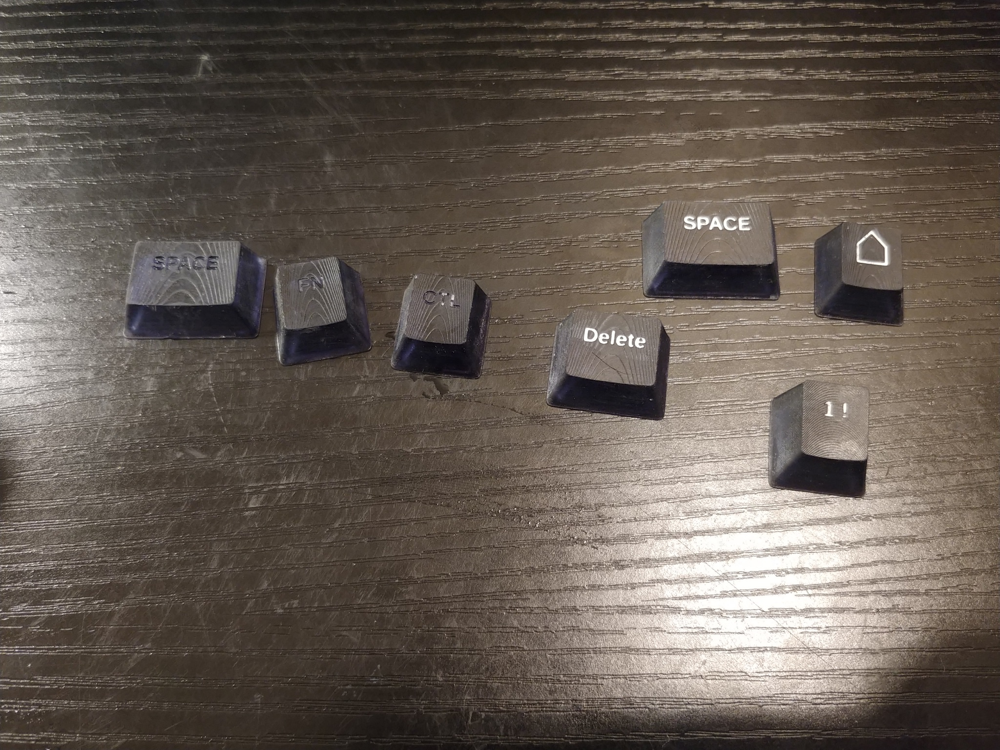
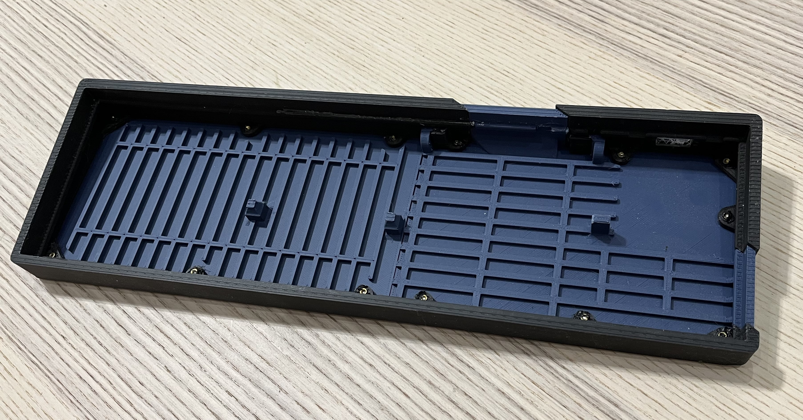
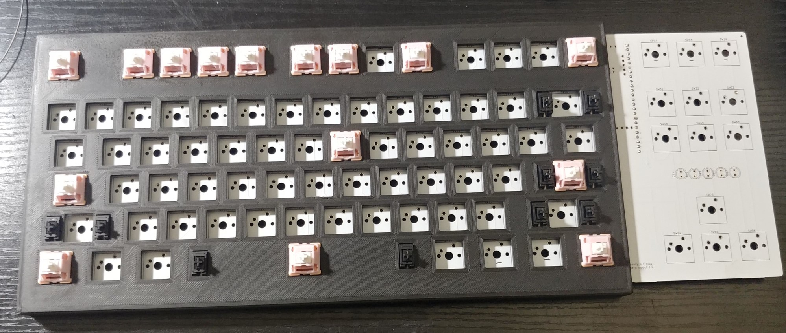
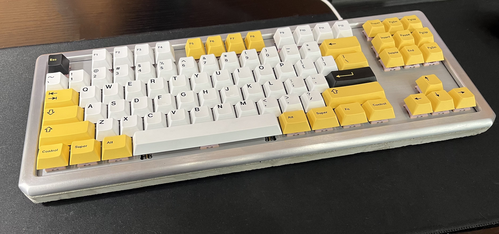

I have a friend who is a keyboard aficionado...

...and my keyboard obsession started because I wanted to drive him crazy. Apparently, 3D printed components do all sorts of things to a keyboard's sound profile. I don't mind; it's all fun to me.
This series of projects has spanned several years, ending with a concrete and aluminum board described at the bottom of this page. To jump right in, here is my first keyboard:

This was a design I found online, so I will keep it brief. It was my introduction to building keyboards, and most of the difficulty came from the sheer number of solder joints and learning to build the firmware.
What made my version unique was that everything was 3D printed, even the keycaps. I had just bought an inexpensive resin printer and jumped at the excuse to use it. I dyed a clear resin a deep transparent blue, then painted the legends, cleaned them up, and finished them with a few coats of clear coat. When I was done, my aficionado friend called me a monster. ("The switches aren't even lubricated, and... well... just look at it!")

My next board was one I designed entirely myself. This time I didn't print the keycaps, but I did have to work within the limits of my printer's build volume.

Again, my friend was not a fan of this board's aesthetics or rigidity. I couldn't argue that splitting the case down the middle made it less rigid (as did 3D printing it, for that matter). However, I couldn't tell the difference between it and "rigid" boards, so it still met the requirements of its end user: me. I also thought it looked pretty cool. I still do.


For my next board, I wanted to do something about the spaghetti wiring, so I learned KiCad and had proper PCBs made by JLCPCB.

I also simplified the case design, both aesthetically and for printing. And it turns out my friend was right about the mushy feel of my last keyboard: I used it as my daily driver at work, and it slowly drove me crazy. With a stiff PCB backing the keys and a short load path to the desk, this board is much more rigid than the last, and it has been my daily driver ever since.


July 2023: The CAD for the next keyboard is finished, and the next step is sourcing material for prototyping.
Update, February 2024: The keyboard is finished! Molding the base out of concrete was harder than expected. Who would have thought intricate details would be tough to cast in concrete? In any case, it's done, and I think I'm finished with keyboards for a while. Here are some pictures of the final product; now I'm off to do something else.
